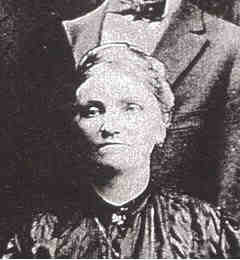

 Anna LIEBLING (1862-1926) |
Anna LIEBLING
• Census: 1910, 15 Apr 1910, Pittsburgh, Allegheny, PA. 5 Anna married Servatius Frederick KRÄMER, son of Franz KRÄMER and Erna MÜLLER, on 8 Mar 1882 in St. Anne, Millvale, PA.1 2 (Servatius Frederick KRÄMER was born on 3 Mar 1855 in Trier, Rheinland-Pfalz, Germany,1 6 died on 19 Oct 1927 in Pittsburgh, Allegheny, PA 1 7 and was buried in St. Michael Cemetery, Pittsburgh, Allegheny, PA 7.) |
1 Mary Anne Kraemer Wojszynski, Descendant Chart of Franz Krämer (Pittsburgh, PA, 1998).
2 Mary Anne Kraemer Wojszynski, The Krämer/Kraemer Family Tree (Pittsburgh, PA, August 1999).
3 Birth Certificate, Anna Liebling, (Neunkirchen, Germany, 1862).
4 Commonwealth of Pennsylvania, Department of Health, Bureau of Vital Statistics, Death Certificate - Anna Krämer (25 Nov 1926).
5 Pennsylvania, Allegheny County, 1910 U.S. Census, Population Schedule (Washington, D.C., National Archives and Records Administration), ED 507, Sheet 3, Line 52.
6 Birth Certificate, Servatius Kramer, (Trier, Germany, 1855).
7 Commonwealth of Pennsylvania, Department of Health, Bureau of Vital Statistics, Death Certificate - Servatius Krämer (19 Oct 1927).